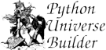

|  | Developer's Documentation | |
We call those objects "agents" if they can initiate turns on their own initiative by passing messages to other objects. Turn-based agents can register to be called on each turn, allowing them to take a turn every time the player does. Real-time agents can be called on a clock-tick to update their own state. Either way, agents can do just about anything the player can.
As of this writing (2006), though, it's still a long way from happening.
Emerald will be an add-on package for PUB, and you should visit the Emerald site for more information on it's progress.